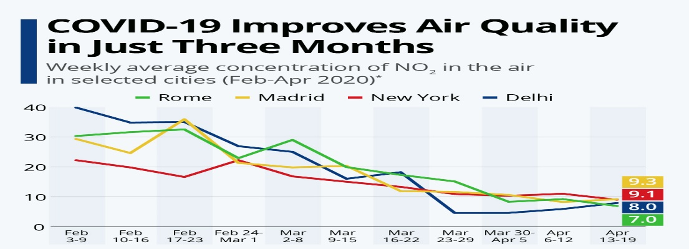

Due to the coronavirus outbreak's impact on travel and industry, many regions and the planet as a whole experienced a drop in air pollution. Reducing air pollution can reduce both climate change and COVID-19 risks but it is not yet clear which types of air pollution (if any) are common risks to both climate change and COVID-19. The Centre for Research on Energy and Clean Air reported that methods to contain the spread of coronavirus, such as quarantines and travel bans, resulted in a 25 per cent reduction of carbon emission in China. In the first month of lockdowns, China produced approximately 200 million fewer metric tons of carbon dioxide than the same period in 2019, due to the reduction in air traffic, oil refining, and coal consumption. One Earth systems scientist estimated that this reduction may have saved at least 77,000 lives

And a study published in May 2020 found that the daily global carbon emissions during the lockdown measures in early April fell by 17% and could lead to an annual carbon emissions decline of up to 7%, which would be the biggest drop since World War II according to the researchers. They ascribe these decreases mainly to the reduction of transportation usage and industrial activities. However, it has been noted that rebounding could diminish reductions due to the more limited industrial activities. Nevertheless, societal shifts caused by the coronavirus lockdowns – like widespread telecommuting and the use of virtual conference technology – may have a more sustained impact beyond the short-term reduction of transportation usage
